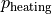

User Guide¶
This page provides an in-depth guide to tethys, covering details of the downscaling methodology and advanced usage.
Version 2 is a major update with increased flexibilty for spatial resolutions and sectoral breakdowns.
Note
This page is currently under construction in preparation for version 2
Conceptual Overview¶
tethys consists of 2 stages: spatial downscaling and (optionally) temporal downscaling.
{kind=link}
Spatial Downscaling¶
For each water demand sector, tethys disaggregates water demand by region into water demand by grid cell based on an appropriate spatial proxy. GCAM uses 6 water demand sectors, and past downscaling workflows have used the following proxy configuration:
Water Demand Sector |
Spatial Proxy |
|---|---|
Domestic/Municipal |
Population |
Electricity Generation |
Population |
Manufacturing |
Population |
Mining |
Population |
Livestock |
Livestock |
Irrigation |
Irrigated area |
Within a region, it is assumed that the distribution of water demand is proportional to the distribution of the proxy. For example, a grid cell that is part of the USA region and contains 1% of the USA’s population would be allocated 1% of the USA’s municipal water demand.

A sector may consist of multiple subsectors. For example, in GCAM, the livestock sector is split into 5 categories of animal products. Additionally, available proxy datasets may not map directly to these subsectors. tethys accounts for this by allowing user-defined mappings of water demand subsectors to proxy variables. The table below shows an example mapping between GCAM livestock subsectors and animal categories in the GLW 3 dataset.
Livestock Subsector |
Spatial Proxy |
|---|---|
Beef |
Buffalo + Cattle |
Dairy |
Buffalo + Cattle |
Pork |
Pig |
Poultry |
Chicken + Duck |
SheepGoat |
Sheep + Goat |
Subsectoral water demand estimates are sometimes only available at a coarser scale than estimates for the entire sector. This is the case for GCAM-USA, which only has water demand for each livestock subsector at the scale of the entire USA, while each state only has total demand for the entire livestock sector. tethys handles this by first downscaling each subsector using the specified proxy as usual, then harmonizing the result so that the total is consistent with the finer-scale constraint on the entire sector.
Since proxy datasets are not always available at the same spatial resolution as the desired output, tethys automatically re-grids proxies prior to downscaling. tethys also temporally interpolates proxies to the same years as the input demand data.
Temporal Downscaling¶
tethys uses sector-specific formulas from the literature for temporal downscaling, which are described in detail below. In general, these determine the fraction of a year’s water demand to allocate to each month based on a statistical relationship between monthly water demand and some other monthly variable. When necessary, outputs from spatial downscaling are interpolated to annual time steps as an intermediate step.
Domestic/Municipal¶
Temporal downscaling for the domestic/municipal sector follows the formula from Wada et al. (2011), which uses monthly temperature and a regional amplitude coefficient to reproduce summer peaks. For each grid cell,

Electricity Generation¶
Temporal downscaling for the electricity generation sector follows the formula from Voisin et al. (2013), which assumes that monthly water demand is proportional to monthly electricity demand, which in turn depends on heating and cooling degree days (HDD and CDD). HDD for a month or year is defined as the sum of across all days in the time period, while CDD is the sum of . For grid cells where annual HDD > 450 and CDD > 650,
where  is the share of the region’s annual electricity consumption used for heating buildings, is the share used for cooling buildings, and the share for all other uses in buildings, as well as for industry and transportation. These proportions come from region-scale data, but there may be cells in a region that do not have heating or cooling infrastructure (for example, because it doesn’t usually get cold there), so this formula is modified for cells depending on annual HDD and CDD as described in Huang et al. (2018). When HDD > 450, but CDD < 650,
Similarly, when CDD > 650, but HDD < 450
When both HDD < 450 and CDD < 650, all sources of monthly variation vanish, leaving
Irrigation¶
Temporal downscaling for the irrigation sector is based on monthly irrigation profiles calculated from exogenous crop water models. Users supply monthly gridded irrigation data from a model of their choice, which is then averaged over the region-basin, and applied as follows:
Other¶
Temoral downscaling of the livestock, manufacturing, and mining sectors assumes that monthly water demand is uniform, following Wada et al. (2011).
As new methods are developed for temporally downscaling these sectors, they will be added.
Configuration File¶
tethys uses a YAML configuration file. The options in this file correspond to the arguments passed to the Tethys class. Options not present in the config file will use the default. An overview is provided in the following table, with more details and examples below.
Option |
Description |
|---|---|
list of years to be included spatial downscaling |
|
resolution in degrees for spatial downscaling |
|
choice between “withdrawals” (default) or “consumption” |
|
choice between “false” (default) or “true” |
|
relative path to a GCAM database |
|
relative path to csv file containing inputs |
|
name of file to write outputs to |
|
choice between “true” (default) or “false” |
|
see details |
|
see details |
|
see details |
|
see details |
|
see details |
years¶
List of years for spatial downscaling. Region-scale input demands will be filtered to these years. Proxy data will be linearly interpolated to the years on this list (except for years outside the endpoints of the proxy data, which will use the nearest endpoint).
years: [2010, 2015, 2020, 2025]
resolution¶
Output resolution in degrees for spatial downscaling. Proxies will be regridded to this resolution.
resolution: 0.125
demand_type¶
Whether the demands are water withdrawals or conusmption. Default is withdrawals. This option determines what values will be checked in the GCAM database if used, and will be passed along to the outputs.
demand_type: consumption
perform_temporal¶
Whether to perform temporal downscaling or not. Default is false.
perform_temporal: true
gcam_db¶
Path to a GCAM database (the folder containing a bunch of .basex files).
gcam_db: data/GCAM_databases/my_GCAM_db
csv¶
As an alternative to gcam_db, path to a csv file containing region-scale water demand inputs. The file should have the following columns: region, sector, year, and value.
csv: data/example_input.csv
output_file¶
Filepath in which outputs will be written. If none (default), outputs will not be saved, but they can be interacted with in-memory via the outputs attribute of the Tethys class. If the path is not absolute, it will be relative to the directory containing the config file. This file will be overwritten if it exist already and created if it doesn’t, but the directory containing it must already exist.
output_file: outputs/tethys_outputs.nc # the folder "<config_file_dir>/outputs" must already exist
compress_outputs¶
Whether or not to compress the outputs. Defaults to true. This will use zlib level 5, but you can have more customization over this by interacting directly with the outputs attribute of the Tethys class.
compress_outputs: false # because we want our outputs files to be really big for some reason
downscaling_rules¶
A mapping between water demand sectors and proxy variables. The simplest kind of entry is of the form sector: proxy, like for the Municipal sector in the example below. The proxy can optionally be a list of variables that will be added together first. When a sector is composed of multiple subsectors, a second layer of mappings is allowed (as with Livestock in the example below). If the total sector has a total demand at a finer regional resolution (e.g., GCAM-USA livestock), that will be applied as a constraint on the total after downscaling by subsector at coarser regional resolution.
downscaling_rules:
Municipal: Population
Livestock:
Beef: [Buffalo, Cattle]
Dairy: [Buffalo, Cattle]
Pork: Pig
Poultry: [Chicken, Duck]
SheepGoat: [Sheep, Goat]
proxy_files¶
A mapping of file paths (absolute, or relative to the config file) to the proxy variables and years they contain, as well as any flags needed to interpret them. The entries are of the form
filepath:
variables: # variable or list of variables in the file
years: # year or list of years in the file
flags: # flag or list of flags to help interpret the file (optional)
Flags understood are ‘cell_area_share’, and ‘short_name_as_name’. ‘cell_area_share’ means that the grid cell values in the file correspond to the share of that cell covered by the variable, so tethys multiplies by the area of the cell to obtain a quantity that can be used as a proxy. ‘short_name_as_name’ is for netCDF files where variables corresponds to the ‘short_name’ attribute, not the variable name.
For files systematically named by variable and/or year, the file path can contain {variable} and {year}, and the corresponding values will be substituted. If the files use abbreviated names, then variables can be a mapping of variable: abbreviation pairs.
proxy_files:
# 4 files, each containing Population data for a single year
data/population/ssp1_{year}.tif:
variables: Population
years: [2010, 2020, 2030, 2040]
# 7 files, each containing data for a single animal in 2010
# files are named using abbreviations like '5_Bf_2010_Da.tif',
# but we refer to the variable with the full name like 'Buffalo'
data/GLW3/5_{variable}_2010_Da.tif:
variables: {Buffalo: Bf, Cattle: Ct, Sheep: Sh, Goat: Gt, Chicken: Ch, Duck: Dk, Pig: Pg}
years: 2010
# 6 files, each containing multiple variables for a single year
# the variables represent the share of area in the grid cell, not the total area
# we only extract the variables whose netCDF short_name is in the list
data/Demeter/ssp1_rcp26_gfdl_{year}.nc:
flags: [cell_area_share, short_name_as_name]
variables: [Corn_irr, Cotton_irr, OtherCrop_irr, Soy_irr, Rice_irr, Sugarcrop_irr, Wheat_irr]
years: [2005, 2010, 2015, 2020, 2025, 2030]
map_files¶
List of paths to map files. These should be geotiffs with an attribute called ‘names’ containing a mapping of names to region numbers. 0 is reserved for nonland/ignored regions.
map_files: [data/maps/regions.tif, data/maps/regionbasins.tif]
temporal_files¶
Mapping of files that will be accessible to temporal downscaling methods.
temporal_files:
HDD: data/temporal/HDD_monthly.nc
CDD: data/temporal/CDD_monthly.nc
temporal_methods¶
Mapping of sector name to downscaling method in the tdmethods module. If not specified, defaults for GCAM sectors are used. If specified, sectors in the mapping will use uniform downscaling as a fallback. See Temporal Modifications.
temporal_methods:
Municipal: domestic
Electricity: electricity
Generalization¶
tethys was developed with consideration for GCAM’s breakdown of water demand, but was designed to be as flexible as possible with support for user-specified downscaling configurations.
Spatial Modifications¶
Fundamentally, proxy-based spatial downscaling requires
region-scale input data (to be downscaled)
gridded proxy data
a map defining what grid cells belong to each region
The configuration file provides an interface for describing the relationship between input sectors and proxy variables, which enables tethys to be compatible with versions of GCAM using different breakdowns of water demand (for example, different crop types), but also allows it to downscale water demand data from other models and sources. This flexibility makes it easy to run tethys with new input and proxy datasets as they become available.
Suppose we had region-scale Municipal water demand data by income decile, as well as Population datasets broken out similarly. Then this could be represented in the config file with something like
downscaling_rules:
Municipal:
Municipal_d1: Population_d1
Municipal_d2: Population_d2
Municipal_d3: Population_d3
Municipal_d4: Population_d4
Municipal_d5: Population_d5
Municipal_d6: Population_d6
Municipal_d7: Population_d7
Municipal_d8: Population_d8
Municipal_d9: Population_d9
Municipal_d10: Population_d10
proxy_files:
data/Population/{variable}_{year}.tif:
variables: [Population_d1, Population_d2, Population_d3, Population_d4, Population_d5,
Population_d6, Population_d7, Population_d8, Population_d9, Population_d10]
years: [2005, 2010, 2015, 2020]
Temporal Modifications¶
tethys also has a mechanism for defining custom temporal downscaling rules. The tdmethods folder contains functions that take the Tethys object as argument and output a monthly distribution. You can add your own module that defines a temporal_distribution function, and then use the temporal_methods setting to indicate what method should be used for which sector.
As a simple example, suppose we wanted to define a rule that downscales water demand for manufacturing based on the number of days in a calendar month (ignoring leap years), as opposed to 12 equal segments of the year. We could write the following, say daysinmonth.py
# td_methods/daysinmonth.py
import xarray as xr
def temporal_distribution(model):
"""Temporal downscaling distribution based on days in calendar month"""
days_in_month = [31, 28, 31, 30, 31, 30, 31, 31, 30, 31, 30, 31]
distribution = xr.DataArray(days_in_month, coords=dict(month=range(1, 13)) / 365
return distribution
Then, in the configuration file:
temporal_methods:
Manufacturing: daysinmonth
The custom function should be named ‘temporal_distribution’ and accept a Tethys object as its only argument. It should return an xarray DataArray with at least a dimension named ‘month’, but could be also have dimensions ‘year’, ‘lat’, and ‘lon’. The sums across the month axis should add to 1. The resulting distribution will be broadcast against the output from spatial downscaling.